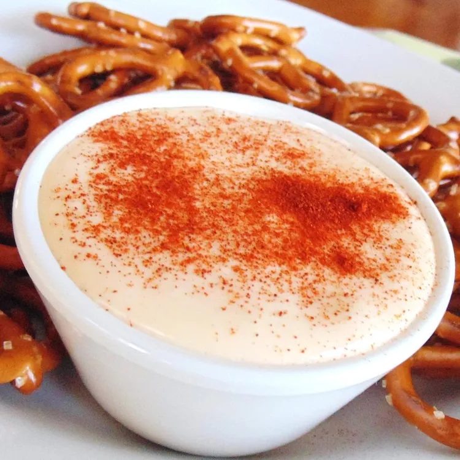

Beer Cheese

Description
Beer cheese made of Gouda to go with your pretzel this Oktoberfest!
Ingredients
- ¾ (8 ounce) package cream cheese
- 10 ounces processed cheese food (such as Velveeta®), cubed
- 1 (12 fluid ounce) can or bottle beer, room temperature
- 4 slices smoked Gouda cheese
- 4 slices mozzarella cheese
- 4 slices smoked provolone cheese
- 1 tablespoon Worcestershire sauce
- 1 tablespoon brown sugar
- 1 tablespoon prepared horseradish, or to taste
- 3 cloves garlic
- 2 teaspoons dry mustard
- salt and ground black pepper to taste
Steps
- Heat cream cheese and processed cheese food together in a sauce pan over low heat until melted, 5 to 10 minutes.
- Slowly stir beer into cheese mixture until thoroughly mixed.
- Add Gouda cheese, mozzarella cheese, and provolone cheese to beer-cheese mixture, stirring continually until smooth, 5 to 10 minutes.
- Stir Worcestershire sauce, brown sugar, horseradish, garlic, mustard, salt, and pepper into cheese mixture until well mixed and heated through, about 10 more minutes.